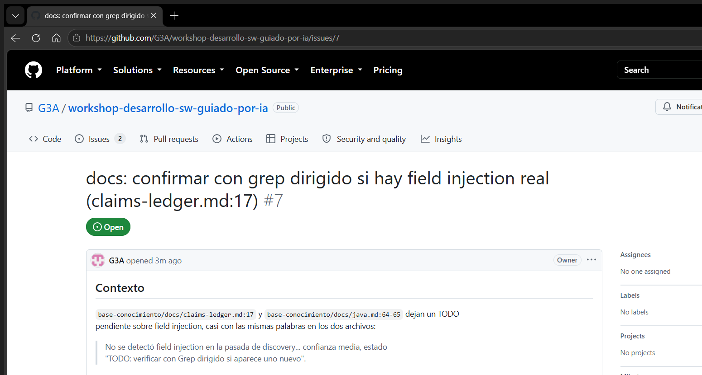
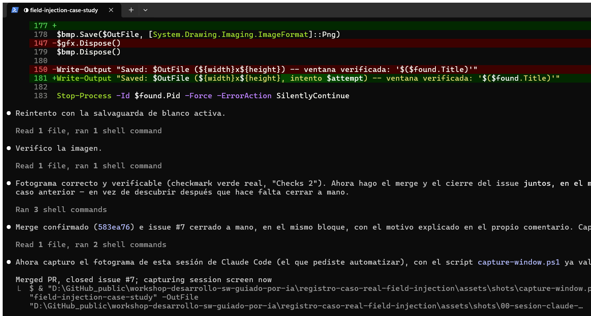
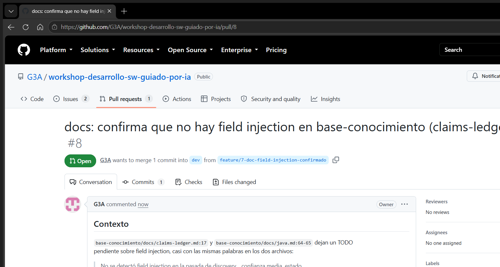
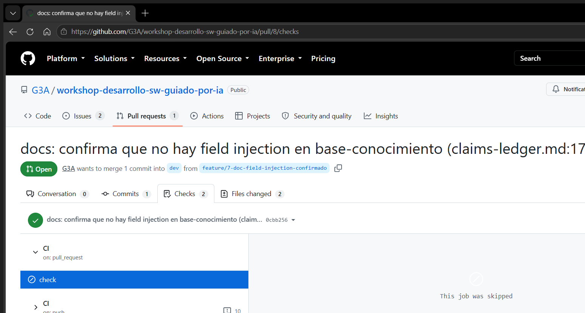
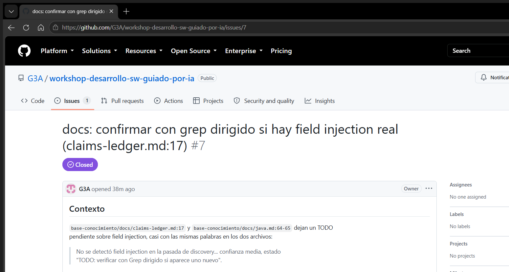

manual completo — sin saltarse nada
De "Fundamentos de colaboración" a "Sprint cerrado": el proceso entero, un fotograma a la vez
Esta página recorre el proceso
operacional con IA completo — los 6 carriles, de punta a punta — sobre
base-conocimiento, sin asumir que ningún nodo ya está resuelto. Donde algo ya
se había hecho antes de esta página, se muestra la evidencia real de cuándo y cómo se hizo,
no una simulación; donde algo no se había hecho, se dice tal cual, sin maquillarlo.
El bloque C (el ciclo por issue) reutiliza el caso
real ya documentado — issue #7, PR #8 — en vez de tocar GitHub de nuevo sin necesidad.
- Fundamentos de colaboración
- Instalar el agente y los gestos base
- Autenticar GitHub y sumar MCP
- Generar el contexto del repo
- Activar los hooks
- Gobernanza: Ruleset y CI
- Deuda técnica y pruebas heredadas
- El ciclo por issue, de punta a punta
- Cierre del sprint
Bloque A · Preparar la máquina
escena 1 · nodo f0Fundamentos de colaboración
Antes de sumar cualquier agente, el proceso pide confirmar cuatro prácticas que son del
equipo, no del agente — si falta alguna, un agente de IA no la resuelve, la amplifica. Esto
es lo que hay realmente en base-conocimiento, verificado, no asumido:
- Control de versiones con Git — real: este mismo repositorio, con
historia real desde
4cdbb7a Initial commithasta hoy, sin ningún.zipreenviado por chat. - Se trabaja con Pull Requests — real: PR
#6 (caso
Actuator) y PR #8
(caso field injection), ambos reales, ambos mergeados — nadie pushea directo a
dev. - Hay revisión de código — parcial, con honestidad: es un repo de un solo
colaborador, sin una segunda persona que lea el diff. Lo que sí hay es una pasada de
/code-reviewantes de mergear (revisión asistida por IA) — sustituye el gesto, no la práctica exacta que pide este nodo. Queda anotado como brecha real, no escondida. - Existe documentación base — real:
README.md,AGENTS.mdyCLAUDE.mden la raíz debase-conocimiento/.
escena 2 · nodos fd1 · fd2 · fd3Instalar el agente y los gestos base
El agente usado en todo este recorrido es Claude Code —
el mismo que escribe esta página. El repo piloto es base-conocimiento: chico,
real, con historia genuina, no un ejemplo de juguete.
Los cuatro gestos base (fd2) no son teoría — los cuatro se usaron de verdad
durante la construcción de esta misma página y del caso field injection:
- @menciones: cada archivo tocado (
claims-ledger.md,java.md, los scripts de captura) se referenció por ruta real, nunca por descripción. - Modo plan: usado explícitamente para replantear la estructura de esta serie de páginas — un plan escrito a archivo, revisado antes de tocar código.
- Permisos: cada comando de red o de escritura (
git push,gh pr merge) pidió su propia autorización — nada corrió en automático sin que quedara claro qué iba a hacer. - Puntos de control / deshacer: ejemplo real, no hipotético — durante el caso field
injection, un commit vacío de diagnóstico se deshizo con
git reset --soft+push --force-with-leasesobre la propia rama de feature, sin perder el commit real ni tocardev.
fd3 (contexto, ventana de tokens, elegir el modelo según la tarea) es
alfabetización, no una acción con evidencia propia — se aplicó implícitamente: esta serie de
páginas se construyó en una sola sesión larga, sin necesitar /clear a mitad de
una tarea que dependiera de memoria de pasos anteriores.
escena 3 · nodos a1 · a2 · G1Autenticar GitHub y sumar MCP
$ gh auth status github.com ✓ Logged in to github.com account G3A (keyring) - Active account: true - Git operations protocol: https - Token scopes: 'gist', 'read:org', 'repo'
El paso a2 (/sdlc-ia:instrument-agent-java) ya se corrió antes de
esta sesión — evidencia real, el commit que lo hizo:
$ git log --oneline --all | grep instrument-agent ca59e26 Instrumenta base-conocimiento con /sdlc-ia:instrument-agent-java
scripts/agent-hooks/
(guarda de secretos, formateo automático, bloqueo de comandos peligrosos, dependency sweep,
audit log, version-pin guard, generated-files guard) y el registro de dos servidores MCP en
.mcp.json — GitHub y DBHub.$ claude doctor Running: native (2.1.246) Last update attempt: failed (install_failed) — 2026-08-26 Invalid settings - .mcp.json › mcpServers.ark_github: Missing environment variables: GITHUB_PAT - .mcp.json › mcpServers.ark_dbhub: Missing environment variables: APP_DSN No installation issues found.
G1 real, no idealizado: la instalación en sí
está bien ("No installation issues found"), pero los dos servidores MCP registrados en
a2 están sin variables de entorno — no van a conectar hasta que
GITHUB_PAT y APP_DSN se configuren. Es exactamente el tipo de
cosa que este gate existe para atrapar antes de seguir, y en este repo sigue pendiente.Bloque B · Preparar el proyecto
escena 4 · nodos G2 · b1/bi · b2Generar el contexto del repo
Antes de que existiera AGENTS.md, el gate G2
(test -f AGENTS.md) habría dicho "no existe" y ruteado a b1
(generación fresca). Eso es exactamente lo que pasó — evidencia real del commit que lo creó:
$ git show --stat b5501c1 docs: bootstrap Java context pack for AI coding agents Genera el paquete de contexto de base-conocimiento con /sdlc-ia:agent-context-java en modo augment: AGENTS.md, CLAUDE.md, docs/{business,data-model,infrastructure, java,target-user,design}.md, docs/adrs/{README,adr-template} y la ADR-0012... base-conocimiento/AGENTS.md | 74 ++++++++++ base-conocimiento/CLAUDE.md | 5 +
AGENTS.md ya existiera (no existía), sino porque el repo ya tenía 11 ADRs y
architecture.md escritos a mano antes de sumar el agente: la skill detectó esos
docs parciales y completó alrededor, en vez de regenerar todo desde cero. b1 y
bi son el mismo comando — la skill decide sola qué falta.$ grep -n "TODO" base-conocimiento/AGENTS.md (sin resultados)
b2 resuelto: cero <!-- TODO -->
pendientes hoy en AGENTS.md — los huecos que la skill dejó para criterio
humano ya se completaron.escena 5 · nodos b3 · b4Activar los hooks
$ ls lefthook.yml .claude/hooks lefthook.yml ls: cannot access '.claude/hooks': No such file or directory
lefthook.yml sí está en la raíz del
monorepo. Los hooks del agente (los que instaló a2) no viven en
.claude/hooks/ como sugiere el chequeo genérico del proceso, sino en
scripts/agent-hooks/, registrados desde .claude/settings.json —
el gate literal de este nodo no los habría encontrado en la ruta que busca; están, solo que
en otra ruta.b4 (lefthook install) no hace falta demostrarlo por separado: ya
se vio corriendo de verdad, dos veces, durante el caso field injection — el hook
pre-commit y el pre-push dispararon solos en cada commit y cada
push reales, sin que nadie los invocara a mano. Esa es la prueba de que están instalados, no
solo presentes en un archivo.
escena 6 · nodos pz · pz2Gobernanza: Ruleset y CI
pz pide dos cosas: instrumentar el proyecto con los controles deterministas
(/sdlc-ia:instrument-project-java) y, aparte, configurar un Ruleset de
GitHub a mano. La primera mitad sí se hizo — evidencia real:
$ git show --stat 7ee8ae9 Instrumenta base-conocimiento con /sdlc-ia:instrument-project-java Instala/verifica los 8 controles deterministas de verdad: -Werror (con 5 fixes reales de warnings preexistentes), Spotless+Checkstyle (ratchet desde dev, Checkstyle en modo reporte con 35 violaciones de brownfield sin triage), Makefile parcheado, lefthook, gitleaks solo en CI, y GitHub Actions... make check da 122 tests, 0 fallas, 0 errores -- verde de verdad, con Docker
make
check único, hooks, escaneo de secretos en CI, ArchUnit, y el workflow de CI mismo —
7 de los 8 controles, verificados rompiéndolos de verdad en su momento (no solo instalados).pz, sin hacer todavía: se
verificó en vivo, no se asumió —$ gh api repos/G3A/workshop-desarrollo-sw-guiado-por-ia/rulesets []
pz2 (un commit vacío para confirmar que el pipeline dispara) tampoco se hizo
como paso aislado en su momento — pero, sin buscarlo, terminó cumpliéndose de todos modos:
durante el caso field injection, un commit vacío real (git commit --allow-empty)
se usó para diagnosticar un CI que no arrancaba. Distinto propósito, mismo gesto, misma
confirmación de que el workflow sí dispara con un push real.
escena 7 · nodos ds · GT · bt/GT2/bi2Deuda técnica y pruebas heredadas
ds (/sdlc-ia:debt-triage) no se ha corrido todavía sobre este
repo — no hay un analizador estático tipo SonarQube o CodeQL conectado. Lo más cercano que
existe es Checkstyle en modo reporte, con 35 violaciones de brownfield sin triage
(mencionadas en AGENTS.md y visibles en cada corrida de CI) — deuda real,
identificada, pendiente de la pasada que este nodo describe.
$ test -d test -o -d tests -o -d __tests__ && echo "existe" || echo "no existe" no existe $ ls base-conocimiento/src/test java ← convencion Maven, no la que busca el gate literal
GT
busca test/, tests/ o __tests__/ — convenciones de
JS/Node. Un proyecto Maven guarda sus pruebas en src/test/java, así que este
chequeo literal diría "no existe" y rutearía a bt (generar pruebas desde cero)
sobre un proyecto que en realidad ya tiene 122 pruebas reales. Falso negativo del
propio gate, no del proyecto — vale la pena ajustar la condición para stacks Java/Maven.Como el proyecto no es legacy sin pruebas (tiene suite real desde su origen, con
Testcontainers y jqwik incluidos), bt, GT2 y bi2
(generar pruebas, mapear costuras, registrar deuda de costuras) no aplicaron en la práctica —
no porque se hayan saltado, sino porque la condición que los dispara nunca se cumplió de
verdad, solo por el defecto del gate anotado arriba.
Bloque C · El ciclo por issue (se repite issue tras issue)
escena 8 · nodo bo1Tomar el hallazgo y abrir el issue
base-conocimiento/docs/claims-ledger.md:17 y docs/java.md:64-65
dejaban un TODO pendiente: confirmar con grep dirigido si había field injection en el código.
El grep dirigido, corrido de lectura, confirmó que no:
$ grep -rn "@Autowired" src/main 0 resultados $ grep -rn "@Inject" src/main 0 resultados $ grep -rn "@Value" src/main 14 resultados, TODOS como parametro de constructor

gh issue create con el contexto
completo. Nace el issue #7.escena 9 · nodos c1 · c4a · c2Planificar, crear la rama y ejecutar el cambio
El cambio (2 docs, misma corrección en ambos) no ameritó el ciclo completo de
github-plan-build — el plan quedó en una línea: actualizar el estado del claim
de "TODO" a "confirmada", citando el grep. Con eso claro, la rama:
$ git checkout -b feature/7-doc-field-injection-confirmado Switched to a new branch 'feature/7-doc-field-injection-confirmado'

Edit sobre claims-ledger.md
y java.md, citando el grep como fuente del claim corregido.escena 10 · nodo c3El gate antes de subir nada
Sin cambios visuales, así que salta directo a la verificación en 4 capas — corrió igual, aunque fuera "solo documentación":
[INFO] Tests run: 122, Failures: 0, Errors: 0, Skipped: 2 [INFO] BUILD SUCCESS [INFO] Total time: 01:11 min OK -- the repo is green ✔️ base-conocimiento-check (103.86 seconds)
gitleaks dentro de make ci, sin hallazgos.
Checklist humano: diff de 2 líneas por archivo, releído antes de commitear.$ git commit -m "docs: confirma que no hay field injection... Closes #7" [feature/7-doc-field-injection-confirmado 0cbb256] docs: confirma... 2 files changed, 6 insertions(+), 5 deletions(-) $ git push -u origin feature/7-doc-field-injection-confirmado
escena 11 · nodos p1 · G5Abrir el PR y esperar el CI

dev.El webhook de GitHub tardó un par de minutos en disparar el CI esa vez — se confirmó con la API que no era un problema real, se esperó, y terminó en verde:

gh run watch): job
check completo en 2m18s, con las mismas 10 anotaciones de Checkstyle no
bloqueantes de siempre.Con el CI en verde, tocaba revisión de código — de nuevo, sin a quién asignarla: un solo colaborador. Directo al merge.
escena 12 · nodo mgMerge — y cierre del issue en el mismo paso
Default branch reconfirmado (main, no dev) antes de mergear —
así que Closes #7 no iba a auto-cerrar el issue. Merge y cierre, en el mismo
bloque, decidido de antemano:
$ gh pr merge 8 --merge --delete-branch $ gh issue close 7 --comment "Cerrado a mano: el PR #8 mergeo a dev..." ✓ Closed issue G3A/workshop-desarrollo-sw-guiado-por-ia#7

merged commit 583ea76 into dev, issue #7
cerrado a mano en la misma tanda de comandos.base-conocimiento no tiene despliegue automático a staging (cd1/
G8 no aplican, solo CI) — así que ahí terminó lo que deja rastro en GitHub. La
página completa de este caso, con más detalle, está en
su propia carpeta.
nodo c5 · nodo G7Retrospectiva y cierre del sprint
Este manual completo, de f0 a acá, dejó tres cosas pendientes reales, no
escondidas: los dos MCP sin variables de entorno (GITHUB_PAT,
APP_DSN), el Ruleset de GitHub sin configurar, y las 35 violaciones de
brownfield de Checkstyle sin triage vía /sdlc-ia:debt-triage. Ninguna bloqueó
el ciclo por issue — el gate c3 sigue verde sin ellas — pero son la lista
concreta de qué atender antes de la próxima vuelta.
¿Quedan issues del sprint para este agente? No, para este recorrido — con eso,
G7 cierra hacia end_ok: el sprint (para este caso) está cerrado, no
terminado — la próxima vez que se tome un issue, el ciclo vuelve a bo1 con el
repo un poco más maduro que esta vuelta.
El cierre: cada nodo del proceso, en una sola tabla
| Carril | Nodo | Estado real |
|---|---|---|
| A · Preparar la máquina | f0 Fundamentos | 3/4 — sin revisión humana (repo de 1 colaborador) |
| fd1-fd3 Instalación y alfabetización | Hecho — evidencia en escena 2 | |
| a1 gh auth · a2 instrument-agent-java | Hecho — commit ca59e26 | |
| G1 Salud | Con hallazgo — MCP sin env vars | |
| B · Preparar el proyecto | G2 / b1 / bi Contexto | Hecho — commit b5501c1 |
| b2 Completar TODOs | Hecho — 0 pendientes | |
| b3 / b4 Hooks | Hecho — corriendo en vivo en cada commit/push | |
| pz Instrumentar + Ruleset | Parcial — controles sí, Ruleset no | |
| pz2 Probar el pipeline | Cumplido sin querer (retrigger del caso field injection) | |
| ds Deuda técnica | Pendiente — no corrido, 35 violaciones identificadas | |
| GT Gate de pruebas | Falso negativo del gate (convención Maven no reconocida) | |
| bt / GT2 / bi2 Pruebas heredadas | No aplica — ya hay 122 pruebas reales | |
| bi2 Issue de costura | No aplica — GT2 nunca disparó "sí" | |
| C · Ciclo por issue | bo1 Tomar el hallazgo | Real — issue #7 |
| c1 / G3 Planificar | Real — plan de una línea | |
| c4a Crear rama | Real — terminal | |
| c2 Ejecutar tareas | Real — captura de la sesión | |
| GUI / c3 / G4 Verificar | Real — 122 tests, BUILD SUCCESS | |
| c4b / c4c Commit + push | Real — terminal | |
| p1 Abrir PR | Real — PR #8 | |
| G5 CI | Real — verde, con demora de webhook documentada | |
| cr / G6 Revisión | No aplica — 1 colaborador | |
| mg Merge | Real — commit 583ea76 | |
| cd1 / G8 CD | No aplica — sin despliegue automático | |
| c5 Retrospectiva | Esta misma sección | |
| G7 / end_ok Cierre | Cerrado para este recorrido |